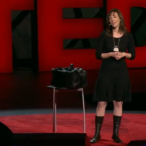

TED.com - Susan Cain: The power of introverts

Susan puts out there a couple points that rang true with me - put a stop the need for constant group work (it's okay at times, but it doesn't need to be the norm). Also, we should each take time to go to our own proverbial wilderness to have our own revelations, or deep thinking.
Personality-wise, I've tested as both an introvert and extrovert (and each time I felt like it described me well). With that in mind, Susan introduced a word to me which describes me well - ambivert. This somewhat temperamental existence doesn't always sit well with my extroverted friends or family members. I'm curious about Susan's fairly new book Quiet: The Power of Introverts in a World That Can't Stop Talking. I'll add it to my list of books to read or listen to.